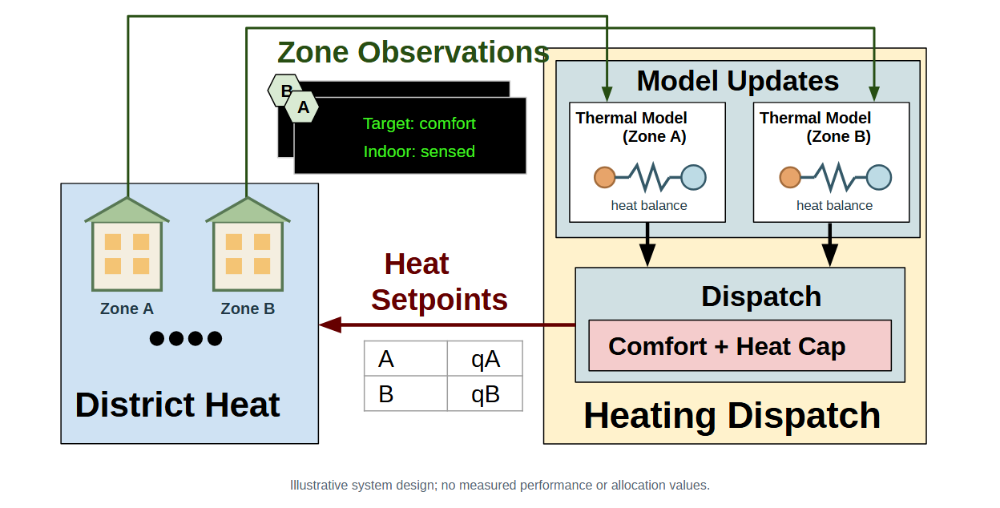
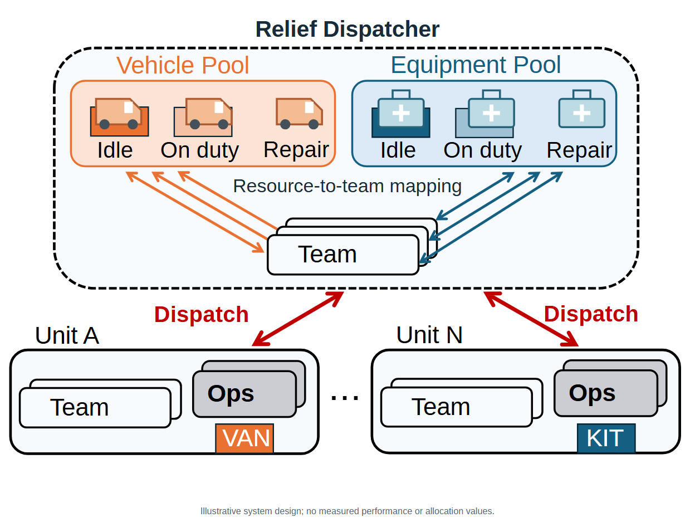
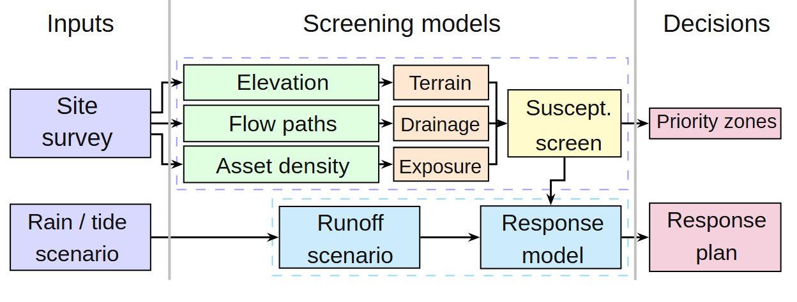
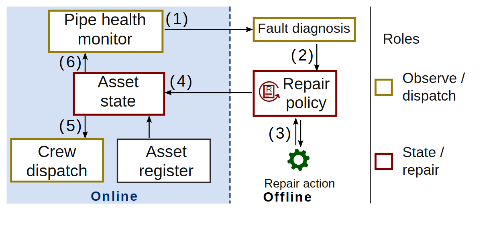
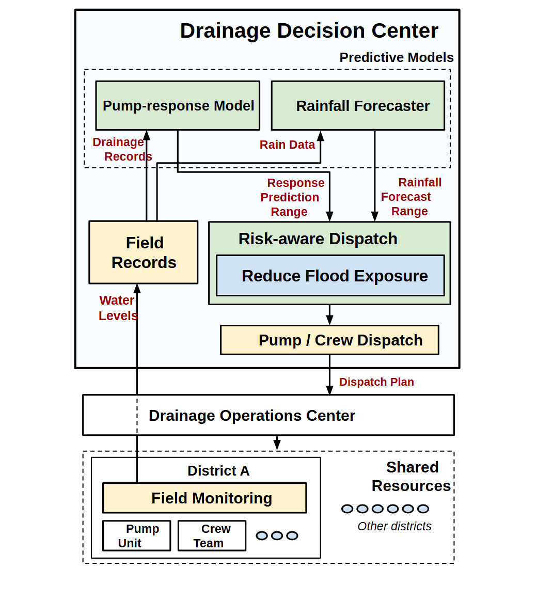
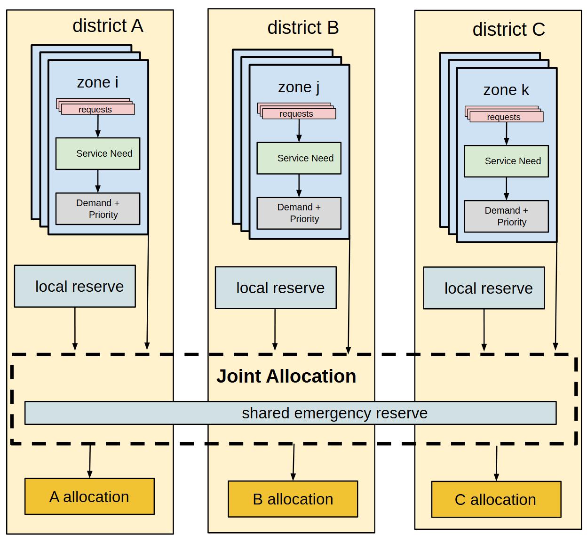

社区供热闭环

基础资产 VA-019 · 虚构情景迁移测试
这些测试检查资源在新场景中的可编辑性、语义替换和图形表达。部分保留源拓扑，供热与救援额外替换了内部图元；均不包含实证建模结果，也不代表全部资产都已深度迁移验证。

基础资产 VA-019 · 虚构情景迁移测试

基础资产 VA-034 · 虚构情景迁移测试

基础资产 VA-044 · 虚构情景迁移测试

基础资产 VA-058 · 虚构情景迁移测试

基础资产 VA-094 · 虚构情景迁移测试

基础资产 VA-101 · 虚构情景迁移测试